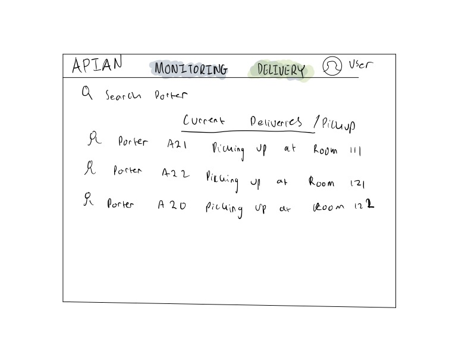
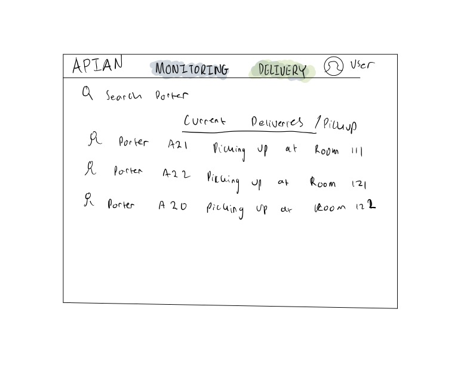

UI/UX
Sketch 1


After consulting with our client with regards to the different requirements our project should have, we started sketching our first design by hand drawing. Some of the important requirements of the website is that the medical staff dispatcher should be able to:
- Track live location of porters.
- View which porters are available or not.
- Send delivery requests to available porters based on the nearest location to pick-up point.
Sketch 2

 

For our second sketch, it was still pretty much similar to the first one although we made subtle changes such as adding a view option in the live monitoring page to see different parts of the hospital. Moreover, we created a table for the delivery request page to make things much more organized. The purpose of this sketch is just for comparison with our first one before proceeding to create interfaces on Figma.
Sketch 3 (Figma)


After an internal meeting with our team, we decided to choose the best components from the previous two sketches and decided to create a design on Figma. This is to show our client and for them to provide concrete feedback. As per the requirement this sketch includes all the important ones such as live monitoring, delivery requests, and delivery history. We also paid attention to detail such as coloring and made the theme similar to the Apian Logo.
Sketch 4 (Figma)

 Our client’s UI/UX specialist gave us feedback after showing them the first Figma design. And she helped us give concrete feedback. Here are some of the feedback she gave us:
Our client’s UI/UX specialist gave us feedback after showing them the first Figma design. And she helped us give concrete feedback. Here are some of the feedback she gave us:
- “Use a different font size/thickness for the display options. The navigational menu should be different from the rest of the page.”
- “Dropdown + Sort by components aren't that obvious. I would use the Bootstrap UI icons."
- "Try showing the user which page is active in a different way. It's not very obvious and looks like you've just changed the colour for fun."
Website 1


After multiple iterations of designs, we finally started coding our website based on the UI/UX design we made. At this point, we realized we haven’t yet considered a couple of things such as adding the option for users to specify a pick-up/delivery location and beacons on the map. There were quite a few design changes from our Figma designs. For example, for the porter table on the Live Monitoring page, not only do we have the Porter name but we also added status, last updated, the option to make a porter available or unavailable, and the ability to delete a porter. Most of these additional features were added after going back and forth with our client.
Final Website


Finally we are proud to say that we have finalized our UI/UX for our web app. There are a couple of changes such as the floor plan. The floor plan displayed is actually the actual hospital floor plan in which we are going to deploy our project in. We made the design a lot cleaner than the previous design and we made sure to highlight important actions with bright or dark colors.